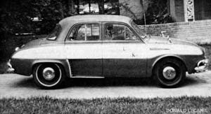

Made by Electro Automotive, this sporty electric conversion car uses a 1965 Aztec body and Volkswagen chassis. It’s powered by a 96-volt battery series and can travel up to 100 miles at a top speed of 85 mph.